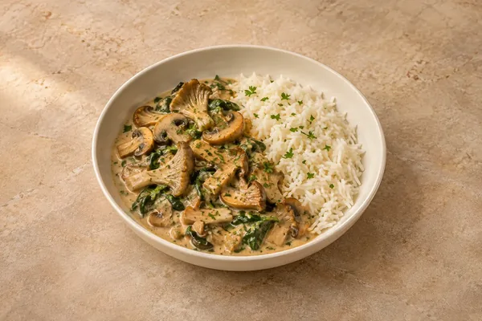

Mushroom & spinach stroganoff with rice
Sides included in the recipe.
Comfort
Quick creamy chicken — ready in about 20 minutes.
Estimated total: About 30 min total
Ingredient quantities update automatically

Divide into shallow containers to cool, refrigerate within 2 hours and eat within 48 hours. Label the container with the recipe name and the date and time it was made; follow any shorter ingredient use-by or opened-pack instructions.
Freezing not recommended for the finished cream sauce and chicken. Make fresh for the best sauce texture and follow the chilled leftover instructions.
Reheat once on the hob or in the microwave until steaming hot throughout; stir and turn meat pieces so the centre heats evenly. Do not use the slow cooker to reheat chilled leftovers. Heat the chicken through gently in the sauce and avoid prolonged boiling.
Use chicken breast as written. Replace wine with extra chicken stock and a little lemon juice to taste. Crème fraîche gives a tangier sauce than double cream.
Keep chilled food at 0–5°C and follow the shortest ingredient use-by or opened-pack instruction. Cool cooked leftovers in small portions and refrigerate within 2 hours. Reheat suitable cooked leftovers only once, until steaming hot throughout; ingredients already reheated in this recipe must not be reheated again. Serve chilled desserts cold. Freezing recommendations and any exceptions for a base prepared without cream or prawns are explained in this recipe’s Freezing note.
Food-safety guidance: Food Standards Agency: chilling and freezing · reheating leftovers.